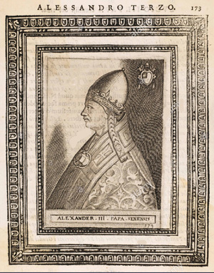
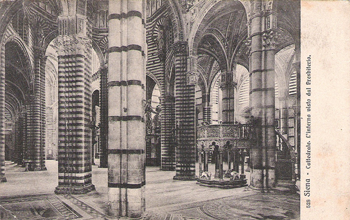

|
| |
Il 18 novembre 1179, secondo la tradizione, viene consacrata la cattedrale metropolitana di Santa Maria Assunta. Ancora la tradizione, poi, racconta che la benedizione viene impartita da papa Alessandro III, il senese Rolando Bandinelli.

Il Duomo di Siena, come confermano scavi e ricerche archeologiche, sorge su un’area frequentata fin dall’epoca etrusca, che ebbe una destinazione religiosa già in età paleocristiana. Un’area sacra, quindi, e sentita tale dalle varie popolazioni senesi che si sono succedute nei secoli. In questa stessa area sorge già la cattedrale romanica: almeno dal X secolo dedicata alla Madonna; chiamata “ecclesia beatissime Dei genitricis Marie”, nei secoli successivi; dalla metà del XII secolo chiamata già “ecclesia Sante Marie”. Su queste basi, dunque, proprio in questo XII secolo sarebbe iniziata la costruzione del “nuovo” edificio religioso voluto dai Canonici del duomo e, appunto, riconsacrato nel 1179. Tuttavia nessun documento di quel periodo testimonia lavori che riguardarono la cattedrale e le prime attestazioni certe hanno inizio solo con il mese di dicembre del 1226, cioè nel momento in cui la Repubblica di Siena inizia a registrare presso gli uffici di Biccherna (uffici delle uscite) i costi e i contratti relativi alla costruzione e decorazione del nuovo, e più importante, edificio religioso della città.

(cliccare sulla cartolina per ingrandirla)
Nel tempo gli storici si sono, tuttavia, posti molti interrogativi sulla data del 18 novembre 1179. Sull’anno, in realtà.
Che la prima benedizione ricevuta dal duomo sia stata effettuata il 18 novembre, infatti, non ci sono dubbi. Nel calendario liturgico annesso all’Ordo Officiorum Ecclesiae Senensis, ovvero il libro liturgico della chiesa medievale senese (comunemente datato al 1215 anche se oggi alcuni ne sostengono una retrodatazione al secolo precedente), si legge, proprio alla data del 18 novembre: “S. Fridiani episcopi et confessoris et dedicatio senensis ecclesiae”.
Lo stesso Ordo Officiorum, inoltre, descrive puntualmente le celebrazioni che la chiesa senese teneva ogni anno in questo giorno. L’anno 1179 ha invece altra origine: lo cita per primo lo storico Orlando Malavolti, siamo nel 1599 e, in seguito, viene ripreso da Giugurta Tommasi, nel 1625.
Quando Tommasi assume la carica di operaio dell’Opera Metropolitana fa affiggere sul muro esterno del campanile un’iscrizione, esistente ancora oggi, che inizia con queste parole: “questa fu fatta da Alessandro III Sommo Pontefice nostro concittadino nel 1179…”. Sia Malavolti che Tommasi, scrivono in un’epoca in cui Siena ha bisogno di riaffermare con forza i pilastri fondamentali della sua storia, per cui una data certa per la consacrazione del duomo, alla luce degli eventi storici di quegli anni, diventa di capitale importanza.
|

 ACCADDE OGGI
ACCADDE OGGI